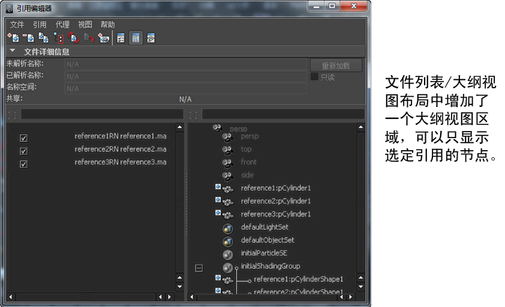
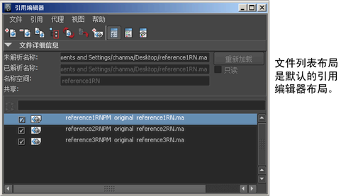
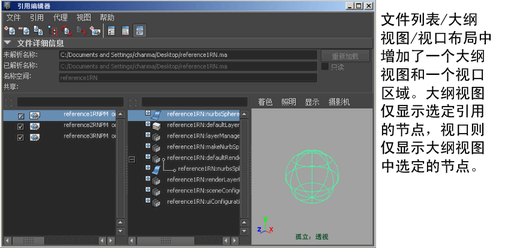
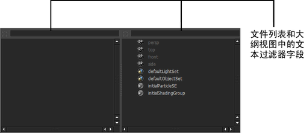

“引用编辑器”(Reference Editor)包含三个布局，均可以从“引用编辑器”(Reference Editor)工具栏进行访问。这三个布局分别为“文件列表”(File List)、“文件列表/大纲视图”(File List/Outliner)和“文件列表/大纲视图/视口”(File List/Outliner/Viewport)。



“文本过滤器”(Text Filter)字段将显示在“引用编辑器”(Reference Editor)的“文件列表”(File List)和“大纲视图”(Outliner)视图中。要过滤显示在其中每个视图中的项目，请在该字段中键入文本。

“文本过滤器”(Text Filter)字段左侧的图标指示“文本过滤器”(Text Filter)当前是否处于活动状态。如果“文本过滤器”(Text Filter)处于活动状态，单击该图标可关闭过滤器。
有关使用“文本过滤器”(Text Filter)字段的详细信息，请参见控制在编辑器中显示的对象或属性类型。